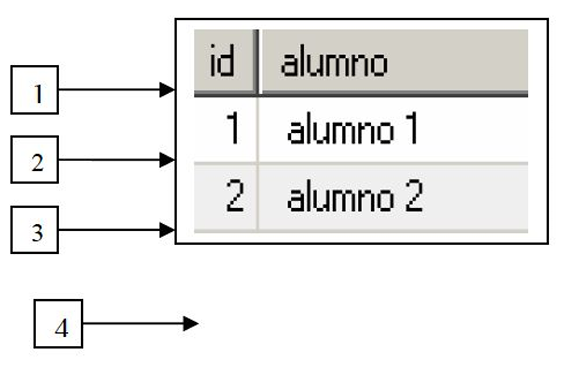

Cursores en MySQL
Es el instrumento que se utiliza cuando la sentencia SQL dentro de un programa almacenado devuelve más de una fila y no solo una, como hemos visto en el apartado anterior con la sentencia SELECT…INTO.
De esta manera, un cursor es una zona de memoria que contiene un conjunto de filas resultantes de una sentencia SQL con la ventaja de que podremos recorrer, visualizar y manipular una a una cada una de esas filas.
Sintaxis
DECLARE nombre_del_cursor CURSOR FOR sentencia_select;Un aspecto muy importante a tener en cuenta es que los cursores se declaran en los procedimientos u otros programas almacenados después de la declaración de variables, no hacerlo así producirá una situación de error.
Ejemplo Básico - Cursor1
DELIMITER $$
DROP PROCEDURE IF EXISTS cursor1 $$
CREATE PROCEDURE cursor1 ()
BEGIN
DECLARE v_id INT;
DECLARE v_alumno VARCHAR(30);
DECLARE c_alumnos CURSOR FOR
SELECT id, alumno -- SELECT *
FROM alumnos
WHERE id <=2; -- Solo las 2 primeras filas
OPEN c_alumnos;
alumnos_cursor: LOOP
FETCH c_alumnos INTO v_id, v_alumno;
/* Aquí iría el tratamiento de los datos recuperados*/
/* Por el momento solo visualizarlos*/
SELECT v_id, v_alumno;
END LOOP alumnos_cursor;
CLOSE c_alumnos;
END $$
DELIMITER ;Sentencias asociadas al cursor:
- Declaración del cursor: En las líneas 8 a 11 se declara el cursor.
- Apertura del cursor: Cláusula OPEN (línea 12). El cursor se inicializa trayendo a memoria las filas que cumplen la condición del cursor, en este caso sólo 2 filas por la cláusula WHERE de la línea 11. El puntero del cursor se queda apuntando al comienzo del conjunto de filas recuperadas.
- Recuperación de las filas del cursor: Cláusula FETCH (línea 14): Cada vez que se ejecuta recupera la siguiente fila a la que apunta el cursor y avanza el puntero una posición. Cada fila recuperada la va almacenando en las variables v_id y v_alumno.
- Cierre del cursor: Cláusula CLOSE (línea 19). Desactiva el cursor liberando la zona de memoria ocupada por el cursor.
Resultado de la Ejecución:
mysql> call cursor1();
+------+----------+
| v_id | v_alumno |
+------+----------+
| 1 | alumno 1 |
+------+----------+
1 row in set (0.00 sec)
+------+----------+
| v_id | v_alumno |
+------+----------+
| 2 | alumno 2 |
+------+----------+
1 row in set (0.01 sec)
ERROR 1329 (02000): No data - zero rows fetched, selected, or processed¿Qué ha ocurrido realmente?

Si observas en el esquema anterior, el recorrido de un cursor se asemeja mucho al recorrido de un fichero secuencial, produciéndose error cuando se intenta leer un registro y previamente se ha alcanzado el final del fichero.
La ejecución, paso a paso:
- Recuadro 1: Apertura del cursor (línea 12 del procedimiento anterior). Se traen a memoria las dos filas que cumplen la declaración del cursor. El puntero (flecha) del cursor apunta al comienzo de la primera fila.
- Recuadro 2: Primera vez que se ejecuta en el bucle la sentencia FETCH (línea 14). Se recupera la siguiente fila apuntada por el cursor, en este caso la primera, almacenando el valor de la primera columna (1) en la variable v_id y el valor de la segunda columna (alumno1) en la variable v_alumno. El puntero del cursor avanza una posición.
- Recuadro 3: Segunda vez que se ejecuta en el bucle la sentencia FETCH (línea 14). Se recupera la siguiente fila apuntada por el cursor, en este caso la segunda, almacenando el valor de la primera columna (2) en la variable v_id y el valor de la segunda columna (alumno2) en la variable v_alumno. El puntero del cursor avanza una posición.
- Recuadro 4: Tercera vez que se ejecuta en el bucle la sentencia FETCH (línea 14). Se intenta recuperar la siguiente fila apuntada por el cursor pero no hay ninguna fila que recuperar pues el cursor ha finalizado, por tanto se produce la situación de error.
Manejo de Errores
Para tratar este error, el intento de recuperar una fila habiendo llegado ya al final del cursor, definiremos un manejador de error:
DECLARE CONTINUE HANDLER FOR NOT FOUND SET v_ultima_fila=1;Ejemplo Mejorado - Cursor2
DELIMITER $$
CREATE PROCEDURE cursor2()
BEGIN
DECLARE v_id INT;
DECLARE v_alumno VARCHAR(50);
DECLARE v_ultima_fila INT DEFAULT 0;
DECLARE cursor_alumnos CURSOR FOR
SELECT id, alumno
FROM alumnos
WHERE id IN (1,2);
DECLARE CONTINUE HANDLER FOR NOT FOUND SET v_ultima_fila=1;
OPEN cursor_alumnos;
bucle: LOOP
FETCH cursor_alumnos INTO v_id, v_alumno;
IF v_ultima_fila = 1 THEN
LEAVE bucle;
END IF;
SELECT v_id, v_alumno;
END LOOP bucle;
CLOSE cursor_alumnos;
END $$
DELIMITER ;Explicación del procedimiento cursor2:
- Con la instrucción de la línea 13 estamos declarando un manejador de error para el error NOT FOUND, que es el que se produce cuando se intenta recuperar una fila habiendo llegado al final del cursor. Se utiliza una variable (v_ultima_fila) que tomará el valor 1 en el momento que se produzca el error. Dentro de nuestro programa podremos preguntar por su valor.
- Cuando se produzca la situación de error, la ejecución del programa continuará (debido a la cláusula CONTINUE de la línea 13) y no finalizará en el punto donde se encuentra el error. En el momento en que la instrucción de la línea 16 (FETCH … INTO) falle por no poder leer ninguna fila del cursor, la variable v_ultima_fila tomará el valor 1 y la ejecución del procedimiento continuará por la línea siguiente al error (en este caso por la línea 17) para abandonar el bucle.
Puedes ejecutar el programa desde la línea de comandos y comprobarás que ya no se finaliza el programa tras el error como en el procedimiento cursor1, puesto que en el momento en que se intente leer una fila del cursor posterior a la última, la condición de la línea 17 será cierta y por tanto la ejecución del programa abandonará el bucle (línea 18) y continuará por la línea 22 (recuerda que si el error no se hubiera tratado el programa hubiera finalizado y terminaría en el mismo punto en que se produjera el error).